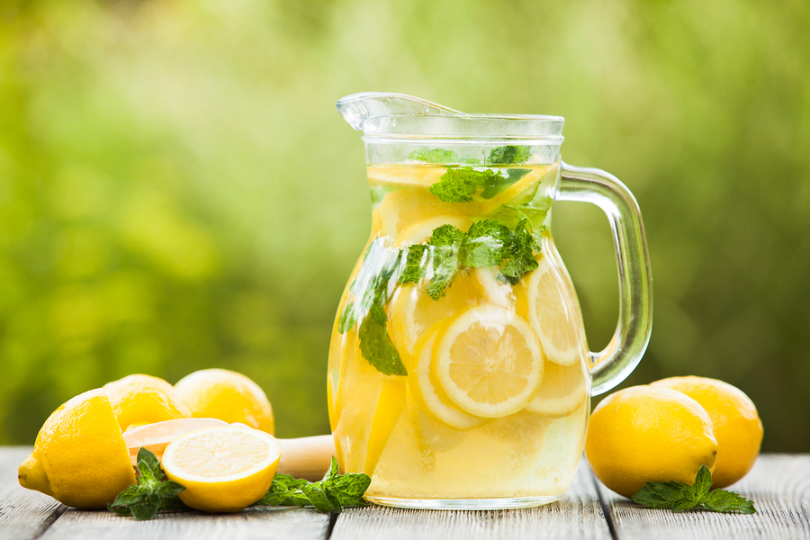

Vintage Lemonade

Say hi to summer with fresh and juicy, chilled lemonade!
In the 1800's this is how people made lemonade—you can do it too! It's not that difficult, and tastes wonderful!
Ingredients
- 5 lemons
- 1 ¼ cups white sugar
- 1 ¼ quarts water
- 1 cup Jaljeera
Directions
- Peel the rinds from the 5 lemons and cut them into 1/2 inch slices. Set the lemons aside.
- Place the rinds in a bowl and sprinkle the sugar over them. Let this stand for about one hour, so that the sugar begins to soak up the oils from the lemons.
- Bring water to a boil in a covered saucepan and then pour the hot water over the sugared lemon rinds. Allow this mixture to cool for 20 minutes and then remove the rinds.
- Squeeze the lemons into another bowl. Pour the juice through a strainer into the sugar mixture. Stir well, pour into pitcher and pop it in the fridge! Serve with ice cubes.
Jump to Home